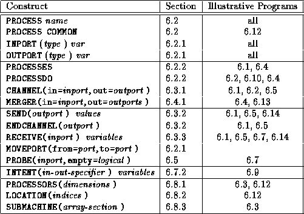

![[DBPP]](pictures//asm_color_tiny.gif)


![[Search]](pictures//search_motif.gif)
In this chapter, we have discussed a programming language, Fortran M, that provides a direct and complete implementation of the task/channel programming model described in Part I. Fortran M incorporates language constructs for defining tasks and channels. In keeping with the design methodology discussed Chapter 2, it allows mapping decisions to be changed independently of other design aspects. The performance modeling techniques given in Chapter 3 and the modular design techniques given in Chapter 4 also apply directly. Table 6.1 summarizes the language constructs that have been introduced.

Table 6.1: FM quick reference: the constructs described in this
chapter, with an outline of their syntax, the section in which they
are described, and the programs that illustrate their
use.
© Copyright 1995 by Ian Foster